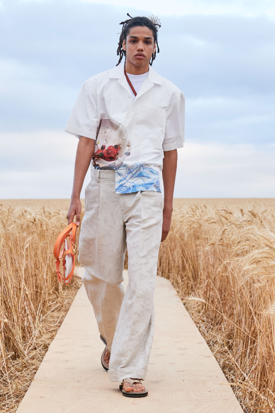

Jacquemus SS21: L’Amour
Runway highlights
- 
- It was a declaration of love!
- The Provençal references
- The shoes!
For me, the runway can’t be a video. It’s at the heart of what we do; it’s not superficial. It’s important to all of us to continue, just like a restaurant that reopens. It’s like a movie of a summer day. It’s our life.
— Simon Porte Jacquemus
L'Amour
Not only was Simon Porte Jacquemus eager to return to the runway, but he wanted to get back to traveling too.
And so it was that an audience of 100 guests—among them VIPs including Isabel Adjani and Tina Kunakey —were ferried to a gently rolling wheat field near Us (pronounced “oose”) in the French Vexin Regional Natural Park, about an hour outside Paris.
Snaking through the sheaves, a dramatic wood plank runway ran 600 meters long, a setup the designer said was meant to evoke authenticity as well as the brand’s more romantic side.
Read the full Vogue Runway review